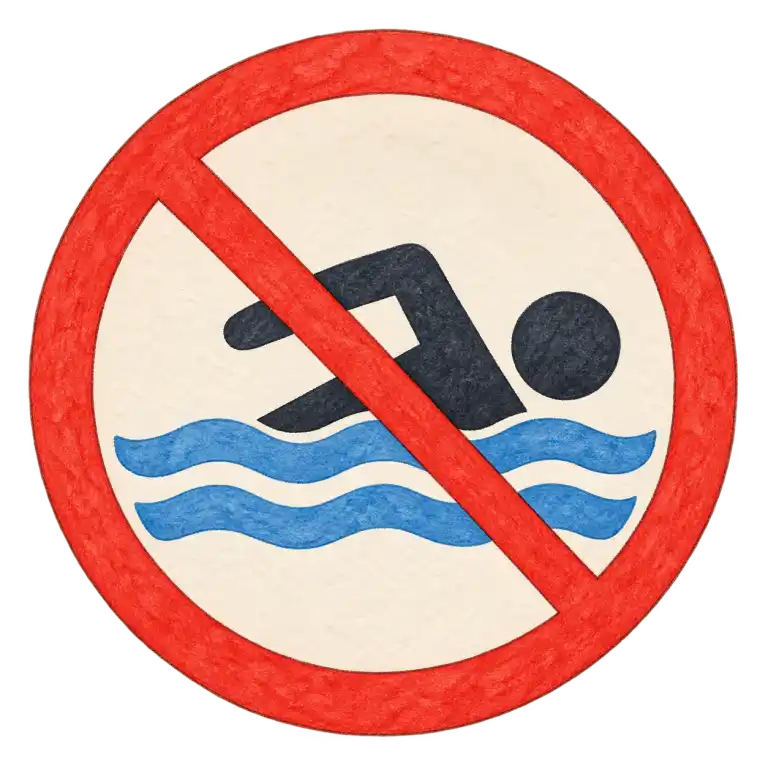
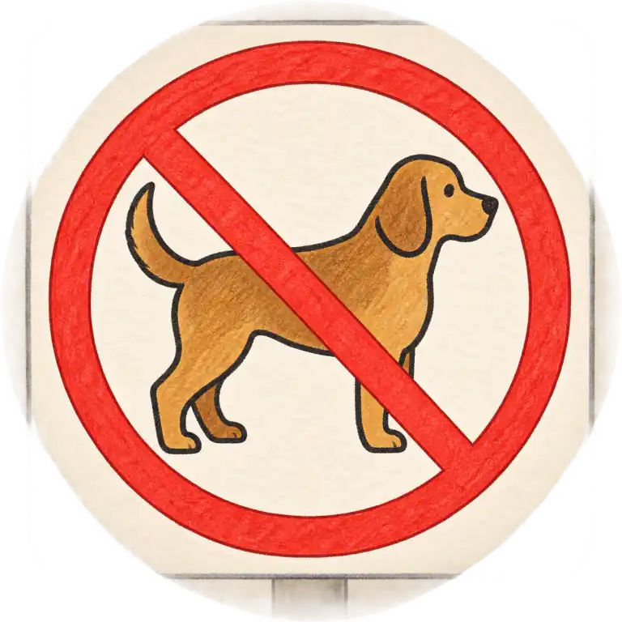
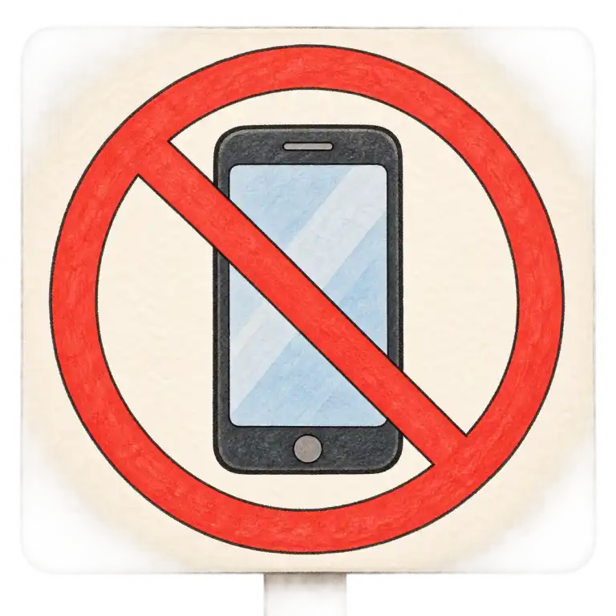
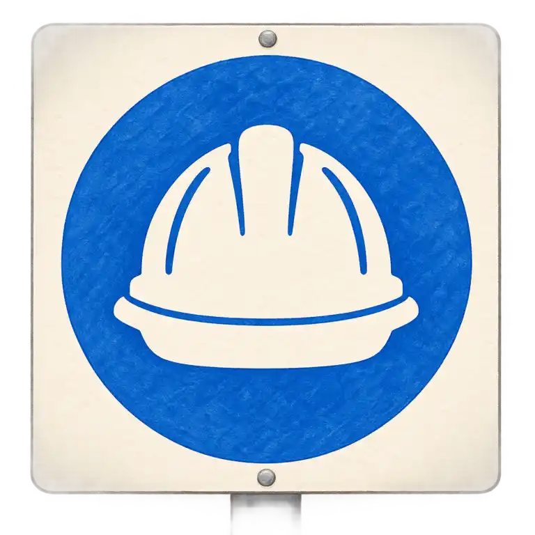
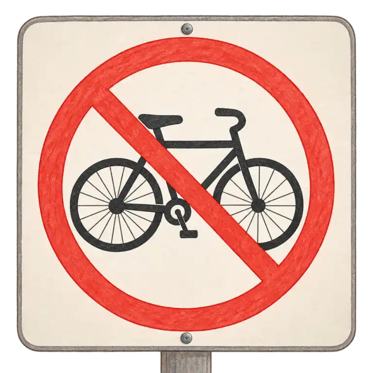
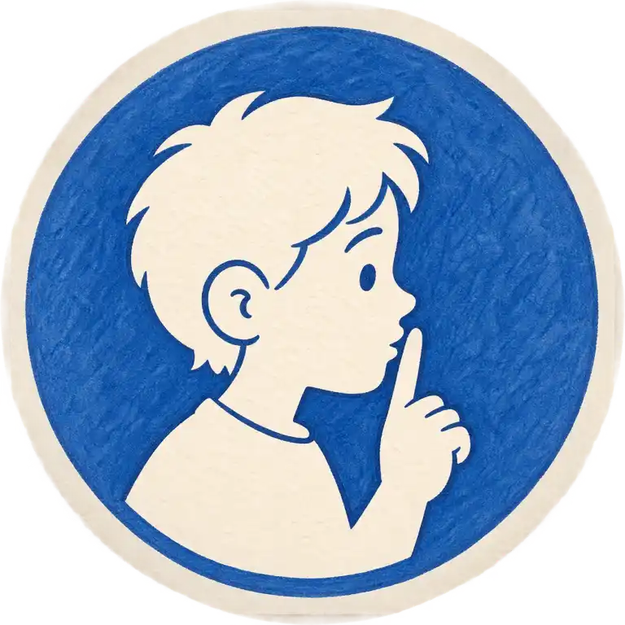
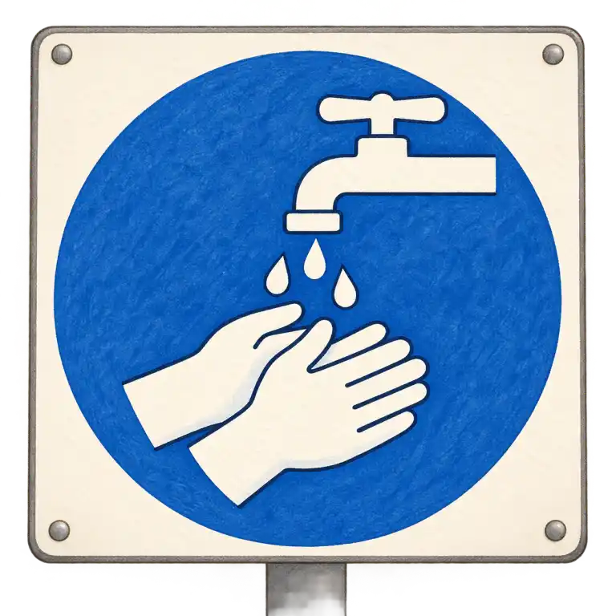
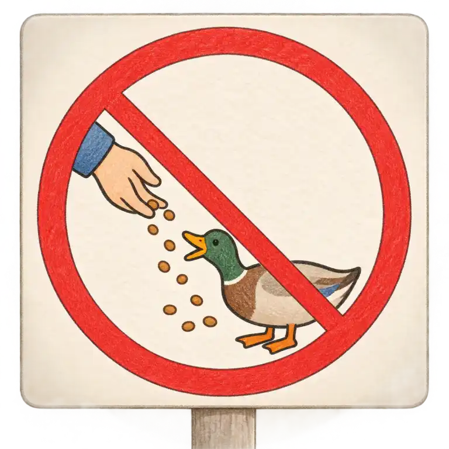

Významy
can = umět, moci · can't = neumět, nemoci
must = muset · mustn't = nesmět
may = smět (zdvořile) · should = měl bys
Pro 5.–6. ročník: umět, smět, muset a nesmět.
Modální slovesa (can, must, may, should) neříkají, co se děje, ale jestli něco umíš, smíš, musíš nebo bys měl. Stojí před jiným slovesem a mají svá vlastní pravidla.
can = umět, moci · can't = neumět, nemoci
must = muset · mustn't = nesmět
may = smět (zdvořile) · should = měl bys
1. Za modálním slovesem je sloveso bez to: I can swim.
2. Ve 3. osobě žádné -s: he can, she must.
3. Otázka a zápor bez do: Can you dance? He can't swim.
mustn't = nesmíš, je to zakázané: You mustn't swim here.
don't have to = nemusíš, ale smíš: We don't have to get up early.
Proč se pletou mustn't a don't have to? Česky obojí začíná „ne-“ a zní podobně, ale význam je opačný: jedno zakazuje, druhé jen říká, že povinnost není. Ptej se: „Je to zakázané, nebo jen zbytečné?“
Na cedulích: červený přeškrtnutý kruh je zákaz (mustn't), modrý kruh je povinnost (must).
Doplň: It is Saturday – we ___ get up early.
✅ It is Saturday – we don't have to get up early. – Nemusíme brzo vstávat.
Červený přeškrtnutý kruh vyjadřuje zákaz — mustn't. Modrý kruh ukládá povinnost — must.








Po modálním slovese následuje infinitiv bez to: I can swim (ne to swim). Ve 3. osobě se nepřidává -s: he can, nikoli he cans. mustn't = nesmíš, don't have to = nemusíš.